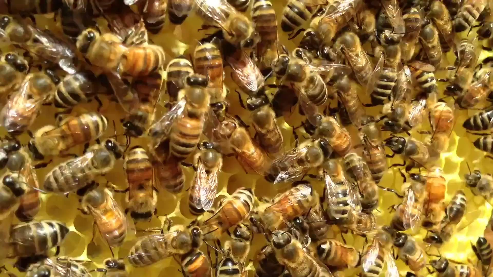
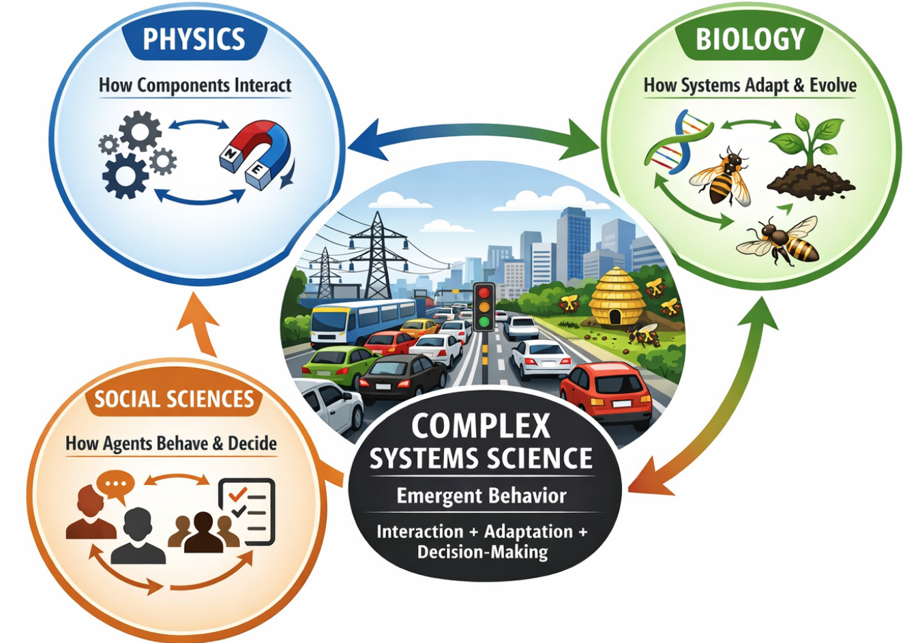
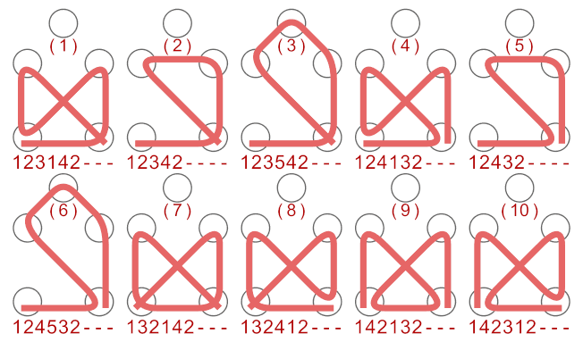

What Are Complex Systems?
Or, How Does Behavior Emerge?
Beyond a Single Discipline
Definition — Emergence
System-level behavior that arises from the interaction of many simple parts, and that cannot be predicted by analyzing those parts in isolation. It is the central phenomenon this entire course is organized around.
The science of complex systems does not belong exclusively to physics, biology, or the social sciences — it emerges from a combination of all three, forming a new discipline in its own right.
From physics
mathematical rigor, quantitative modeling, predictability
From biology
adaptation, evolution, self-organization
From social science
agent interaction, decision-making, collective behavior
Example — Traffic Flow
Behaves like a physical system (density, flow), evolves like a biological one (drivers adapt to congestion), and reflects social behavior (incentives, risk tolerance).
What Physics Contributes — and Where It Stops
Physics is the quantitative, predictive science of matter and interactions: mathematical description, testable predictions, controlled experiments, repeatability.
It excels at isolated systems, linear cause-and-effect, and predictable outcomes.

Honeybees on comb — thousands of simple agents, densely interacting.
Knowing the physics of a single neuron does not explain consciousness. Knowing the aerodynamics of one car does not explain a traffic jam.
Biology: How Systems Adapt
Biology explains adaptation, learning, and survival over time — not just interaction, but change.
Example — honeybee colony: individual bees follow simple rules; the colony adapts foraging strategy to food availability, and evolves behavior to improve survival. Poor strategies die out; successful ones persist.
A honeybee swarm relocating — a colony-level decision made with no central controller.
Biology answers: “How does the system change over time to improve fitness?”
All Three, Integrated

No single discipline alone explains urban traffic jams, cascading power-grid blackouts, or emergency-department overcrowding.
Why Interactions, Not Just Numbers, Matter
Honeybees (10,000 bees): possible pairwise interactions = 10,000 × 9,999 ≈ 100 million
Non-social bees (10 bees, e.g. mason or carpenter bees): 10 × 9 = 90
Same order of magnitude difference in population, six orders of magnitude difference in the space of possible interactions.
Emergence from Interactions
Simple components, connected in complex ways, cause behavior to emerge.
Emergent behavior is impossible to predict analytically — but it can be expected algorithmically.

Simple local crossing rules generate a rich family of distinct global patterns.
What Are Complex Systems?
Definition
Complex systems exhibit emergent behavior that cannot be predicted by analysis of constituent parts — but emergent patterns can be expected algorithmically.
Identifying characteristics:
- High sensitivity to boundary conditions (uncertainty)
- Behavior dominated by power laws (path dependence, outliers)
- Representable as networks of connected elements (abstractability)
Studying complex systems can pay off enormously: the Honey Bee Algorithm, inspired by swarm decision-making, has had an estimated $50B economic impact.
A New Way to Represent Systems: Networks
Complexity science shifted focus from isolated components to interactions, networks, and co-evolution.
Network theory explains connectivity patterns in:
- Social networks
- Power grids
- Biological & genetic-regulatory networks
Impact
Structure matters as much as components.
Emergence, Criticality, and Beyond
Self-organized criticality: many systems naturally evolve to critical states without external tuning — small events trigger large-scale consequences (earthquakes, market crashes).
Evolution as computation: genetic algorithms mimic evolution to solve optimization problems — evolution becomes a general problem-solving mechanism, not just a biological process.
Power laws: hidden regularities behind apparently chaotic phenomena — city sizes, wealth distribution, earthquake magnitudes.
Beyond equilibrium: complexity science extends physics to driven, non-equilibrium systems — applicable to biology, economics, and social systems.
The Big Picture Takeaway
Complexity science has:
- Shifted science from parts → interactions
- Extended physics beyond equilibrium
- Unified evolution, networks, and information
- Explained emergence, power laws, and systemic risk
- Created tools applicable across biology, economics, and cities
It represents a paradigm shift — not just a new topic.
Next: Emergence in Complex Systems
The next lecture asks: why is stability so rare in complex, chaotic systems — and when it does appear, what does it look like?
Reference
Thurner, S., Klimek, P., & Hanel, R. (2018). Introduction to the Theory of Complex Systems. Oxford University Press.

← Course Home · Systems Architecture · Complex Systems · Part 1
Social Sciences: How Agents Decide
Social sciences focus on decision-making, incentives, and interactions among agents.
Example — Drivers in Traffic
Speed chosen by risk tolerance; lane changes chosen by perceived advantage; route chosen by experience or navigation apps. Behavior varies by culture, incentives, and information.
Social sciences answer: “Why do agents choose certain actions?”